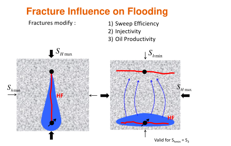

Next: 7.5 Practical aspects of Up: 7. Hydraulic fracturing Previous: 7.3 Hydraulic fracture design: Contents
The objective of multistage hydraulic fracturing is to increase the surface area of the reservoir in contact to the wellbore. Proppants help extend the reach of wellbores through propped. fractures. The main target of multistage hydraulic fracturing are hydrocarbon source rocks. Other hydrocarbon-bearing tight formations can be also stimulated through multistage hydraulic fracturing. An introductory animation video from Marathon is available here: https://www.youtube.com/watch?v=VY34PQUiwOQ.
Horizontal wellbores help create multiple fractures from a single wellbore whenever
 .
Either for normal faulting or strike-slip regimes (and assuming is a principal stress - see Fig. 7.23):
.
Either for normal faulting or strike-slip regimes (and assuming is a principal stress - see Fig. 7.23):
 , and
, and
 .
.
 |
The simplest models of hydraulic fracturing assume planar bi-wing fractures from each stage.
This geometry permits defining one more parameter in addition to
 : the distance between fracture stages
: the distance between fracture stages  (Fig. 7.24).
One may think that reducing is better to increase surface area.
However, placing stages too close may cause non-planar fractures to bump into each other and also require more investment.
The following subsection deals with this topic.
Placing a large number of fractures will require most times increasing the wellbore length.
This is another design parameter, the length of the lateral
(Fig. 7.24).
One may think that reducing is better to increase surface area.
However, placing stages too close may cause non-planar fractures to bump into each other and also require more investment.
The following subsection deals with this topic.
Placing a large number of fractures will require most times increasing the wellbore length.
This is another design parameter, the length of the lateral  .
.
Last, usually multiple horizontal wellbores are drilled next to each other to cover the reservoir volume.
Wells are usually placed parallel to each other and at the same depth spaced by inter-wellbore distance  (Fig. 7.25).
In thick formations, wells may be placed at different alternating depths.
The location on surface from where the wellbores are drilled and fractured is called a drilling/fracturing pad.
(Fig. 7.25).
In thick formations, wells may be placed at different alternating depths.
The location on surface from where the wellbores are drilled and fractured is called a drilling/fracturing pad.
![\includegraphics[scale=0.65]{.././Figures/split/9-PadFrac.pdf}](img1077.svg) |
Multistage hydraulic fracturing in reverse faulting may require vertical wellbores instead of horizontal wellbores. Several source rocks in Argentina, China, and Australia are subjected to mixed reverse faulting and strike-slip conditions changing with depth. The hydraulic fracturing geometry is less straight-forward in these places than in others with well defined normal faulting regime.
Sneddon’s solution for stresses around an elliptical crack in plane-strain.
![\includegraphics[scale=0.45]{.././Figures/split/9B-17.pdf}](img1079.svg) ![\includegraphics[scale=0.45]{.././Figures/split/9B-18.pdf}](img1080.svg) |
Optimizing wellbore spacing, stage separation and sequencing. Zipper fracs and alternate sequencing avert fractures to coalesce based on stress shadow effects.
Multicluster fracturing
Stimulated reservoir volume.

![\includegraphics[scale=0.55]{.././Figures/split/9B-16.pdf}](img1078.svg)
![\includegraphics[scale=0.65]{.././Figures/split/9B-20.pdf}](img1081.svg)
![\includegraphics[scale=0.45]{.././Figures/split/9-MulticlusterFracturing.PNG}](img1082.svg)
![\includegraphics[scale=0.65]{.././Figures/split/9-Microseismicity.PNG}](img1084.svg)